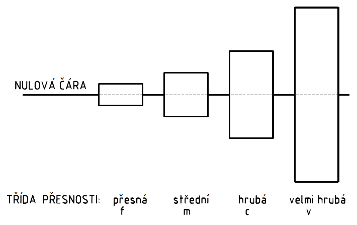

| Třída přesnosti | Mezní úchylky pro rozsahy rozměrů [mm] | ||||||||
|---|---|---|---|---|---|---|---|---|---|
| přez 0,05 do 3 |
3 6 |
6 30 |
30 120 |
120 400 |
400 1000 |
1000 2000 |
2000 4000 |
||
| přesná | f | ±0,05 | ±0,05 | ±0,1 | ±0,15 | ±0,2 | ±0,3 | ±0,5 | |
| střední | m | ±0,1 | ±0,1 | ±0,2 | ±0,3 | ±0,5 | ±0,8 | ±1,2 | ±2 |
| hrubá | c | ±0,2 | ±0,3 | ±0,5 | ±0,8 | ±1,2 | ±2 | ±3 | ±4 |
| velmi hrubá | v | ±0,5 | ±1 | ±1,5 | ±2,5 | ±4 | ±6 | ±8 | |
| Třída přesnosti | Mezní úchylky pro rozsahy rozměrů [mm] | |||
|---|---|---|---|---|
| přez 0,5 do 3 |
3 6 |
6 |
||
| přesná a střední | f,m | ±0,2 | ±0,5 | ±1 |
| hrubá a velmi hrubá | c,v | ±0,4 | ±1 | ±2 |
| Třída přesnosti | Mezní úchylky pro rozsah délek jeho kratšího ramene [mm] | |||||
|---|---|---|---|---|---|---|
| přez 0 do 10 |
10 50 |
50 120 |
120 400 |
400 |
||
| přesná | f | ±1˚ | ±0˚30' | ±0˚20' | ±0˚10' | ±0˚5' |
| střední | m | ±1˚ | ±0˚30' | ±0˚20' | ±0˚10' | ±0˚5' |
| hrubá | c | ±1˚30' | ±1 | ±0˚30' | ±0˚15' | ±0˚10' |
| velmi hrubá | v | ±3˚ | ±2 | ±1˚ | ±0˚30' | ±0˚20' |
| Třída přesnosti | Tolerance přímosti a rovinnosti pro jmenovité déleky [mm] | ||||||
|---|---|---|---|---|---|---|---|
| přez 0 do 10 |
10 30 |
30 100 |
100 300 |
300 1000 |
1000 3000 |
||
| přesná | H | 0,02 | 0,05 | 0,1 | 0,2 | 0,3 | 0,4 |
| střední | K | 0,05 | 0,1 | 0,2 | 0,4 | 0,6 | 0,8 |
| hrubá | L | 0,1 | 0,2 | 0,4 | 0,8 | 1,2 | 1,6 |
| Třída přesnosti | Tolerance kolmosti pro rozsahy jmenovitých délek kratší strany [mm] | ||||
|---|---|---|---|---|---|
| přez 0 do 100 |
100 300 |
300 1000 |
1000 3000 |
||
| přesná | H | 0,2 | 0,3 | 0,4 | 0,5 |
| střední | K | 0,4 | 0,6 | 0,8 | 1 |
| hrubá | L | 0,6 | 1 | 1,5 | 2 |
| Třída přesnosti | Tolerance souměrnosti pro rozsahy délek [mm] | ||||
|---|---|---|---|---|---|
| přez 0 do 100 |
100 300 |
300 1000 |
1000 3000 |
||
| přesná | H | 0,5 | |||
| střední | K | 0,6 | 0,8 | 1 | |
| hrubá | L | 0,6 | 1 | 1,5 | 2 |
| Třída přesnosti | Tolerance kruhového házení [mm] | |
|---|---|---|
| přesná | H | 0,1 |
| střední | K | 0,2 |
| hrubá | L | 0,5 |
Všeobecná tolerance kruhovitosti je číselně rovna toleranci průměru, nesmí však překročit předepsanou nebo všeobecnou toleranci kruhového házení.
Všeobecná tolerance je dána tolerancí hruhovitosti, tolerancí přímostí površek a tolerancí rovnoběžnosti protilehlých površek.
Všeobecná tolerance rovnoběžnosti je číselně rovna rozměrové toleranci, nebo předepsané či všeobecné gemetrické toleranci buď rovinnosti nebo přímosti (podle toho, která z obou je větší). Základním prvkem je delší z obou prvků.
Všeobecné tolerance souososti nejsou stanoveny. Souosost je dána předepsanou nebo všeobecnou tolerancí kruhového házení.
Všeobecné tolerance se předepíší souhrnně v blízkosti nebo přímo v popisovém poli.Označení se skládá z čísla normy ISO, ze značky třídy přesnosti nepředepsaných mezních úchylek rozměrů a ze značky třídy přesnosti všeobecných gemetrických tolerancí, např.